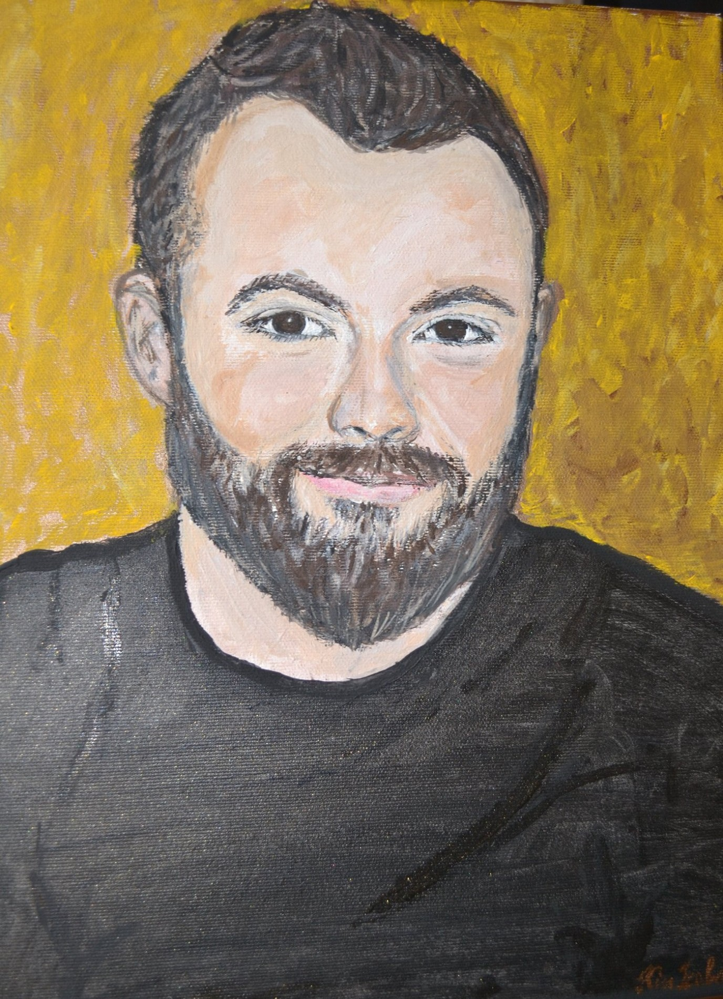

QA professional with experience in the biotechnology / life sciences sector, working in regulated and audited environments where quality, traceability, and risk-based decision-making are essential. My experience covers traditional quality assurance and control tasks, as well as supporting software development and testing processes.
In recent years, I have developed a strong interest in the technical side of QA and have been actively deepening my knowledge in software testing, test automation, and programming.
Charles River Laboratories Hungary | 2021 - present
In this role, I represented the QA team in an internal software development project, working closely with business stakeholders and developers to clarify requirements, write specifications, and support quality-focused design decisions. I contributed to the design of software modules for a web-based Laboratory Information Management System (LIMS), supporting study management, instrument data integration, result reporting, and Quality Control (QC) processes by analyzing end-to-end user workflows and laboratory procedures by using tools such as UML diagrams and flowcharts. I designed and executed User Acceptance Tests (UAT) in a regulated environment using Azure DevOps, contributing to confident go-live decisions. Alongside this, I performed manual testing, while also reporting and tracking defects with clear reproduction steps and risk-based prioritization. Beyond software testing, I was actively involved in quality assurance and compliance activities, including internal and client audits aligned with ISO 9001 standards. I managed controlled documentation, reviewed regulated study materials, and handled quality events and deviations, gaining strong experience in working within highly regulated environments.
Telekom HU | 2019 - 2021
During my university years, I worked part-time at a leading telecommunications company, supporting internet, TV, and phone services. In this remote role, I assisted customers via phone, email, and chat with a wide range of inquiries—including technical troubleshooting, billing issues, service complaints, and product information. I was also responsible for placing orders, booking technician appointments, and maintaining customer follow-up. This experience gave me a strong understanding of telecom systems and customer-facing processes, helping me develop both technical problem-solving and business communication skills.
John von Neumann University | 2024 - 2026
University of Szeged | 2019 - 2021
University of Szeged | 2015 - 2019
Writing clear and traceable test plans, test reports, and specifications. Shaped by 5+ years of documentation work in a regulated pharma/biotech environment.
Structured functional, regression, and UAT testing based on clear test cases and real-world usage scenarios. I don't just follow scripts — I think like a user. I also try to break things.
Hands-on experience with ISO 9001 quality management systems and internal auditing. I bring a compliance mindset to every testing process I'm part of.
Building simple automation frameworks with Selenium and Playwright using the Page Object Model pattern, integrated into CI/CD pipelines via GitHub Actions.
REST API validation using Postman and Newman, including automated collection runs, environment management, and HTML report generation for CI pipelines.
Planning and leading internal audits to ensure compliance with quality management systems and internal requirements. Detailed reporting and improvement recommendations.
I prioritize coverage where it matters most. Before writing a single test case, I identify the highest-risk areas of the application and make sure those are covered first.
Every test activity I perform is traceable. I document test cases, results, and decisions clearly — not as a formality, but because good documentation prevents misunderstandings and supports future work.
I get involved early. Catching issues at the requirements or design stage is faster and cheaper than finding them after implementation — and I actively look for opportunities to do exactly that.
I report bugs with context: clear reproduction steps, environment details, and expected vs. actual behavior. My goal is to make it as easy as possible for developers to understand and fix the issue.
I treat every project as a learning opportunity. Whether it's a new tool, a new domain, or a better way to structure tests — I actively seek improvement and apply it to the next piece of work.
I don't automate for the sake of it. I evaluate what's worth automating based on frequency, stability, and return on investment — and keep manual testing where human judgment adds the most value.
A complete manual QA documentation package for a web application — covering functional behavior, negative scenarios, and security-related issues such as XSS and SQL injection testing.
End-to-end UI test suite targeting Sauce Demo. Built with Python, POM architecture, and GitHub Actions CI/CD integration.
REST API test collection targeting ReqRes.in, built with Postman and Newman. Includes automated runs, environment variables, and HTML reporting.
Thesis project: automated API testing framework targeting The Movie Database API. Test cases covering functional, negative, boundary value, and non-functional scenarios with a custom HTML report dashboard.
This website — a personal QA portfolio customized from a template with HTML, CSS, JavaScript and hosted on GitHub Pages. Includes automated UI tests written with Playwright to validate the live site.
UI automation project built with Playwright and TypeScript. Targeting a real-world web application with POM architecture, data-driven tests, and CI/CD pipeline integration.
© Nándor Csóka's website. All Rights Reserved. Designed by HTML Codex